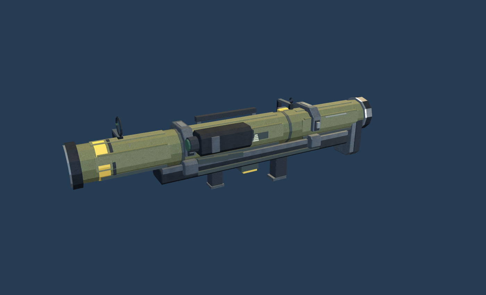
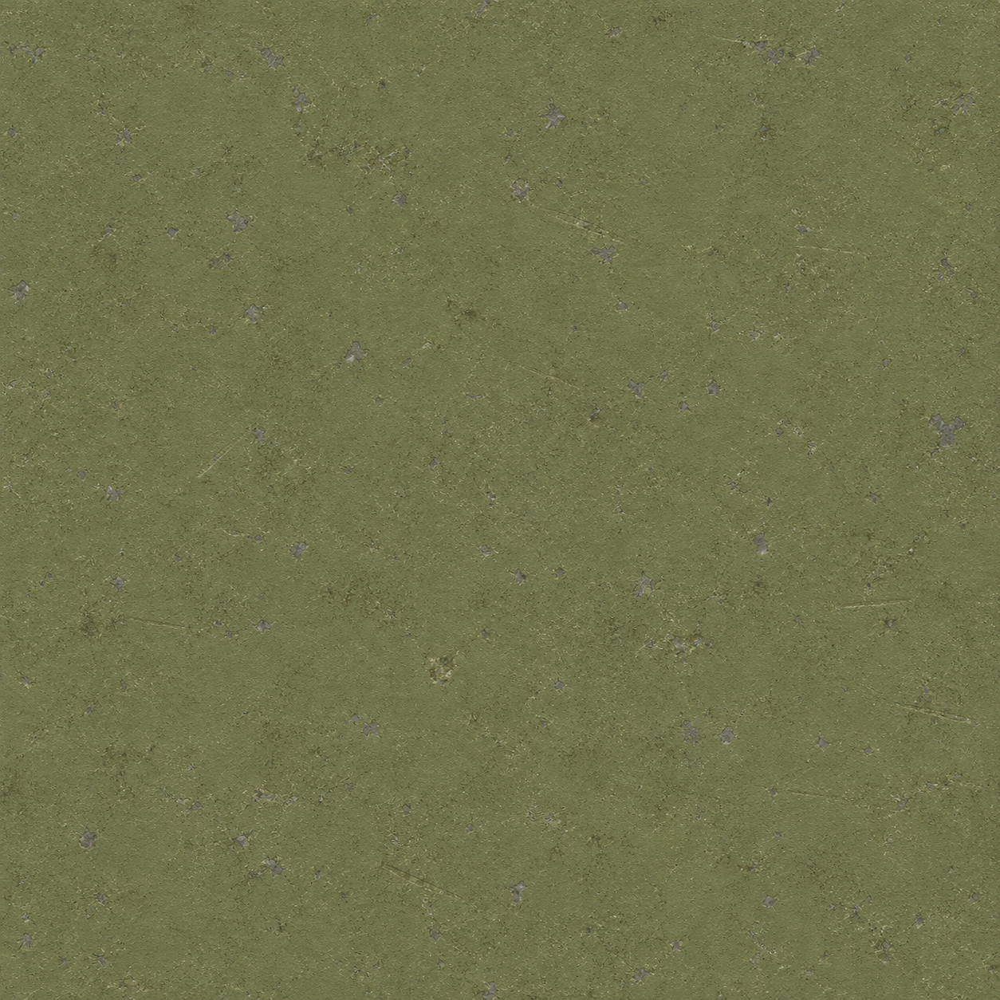
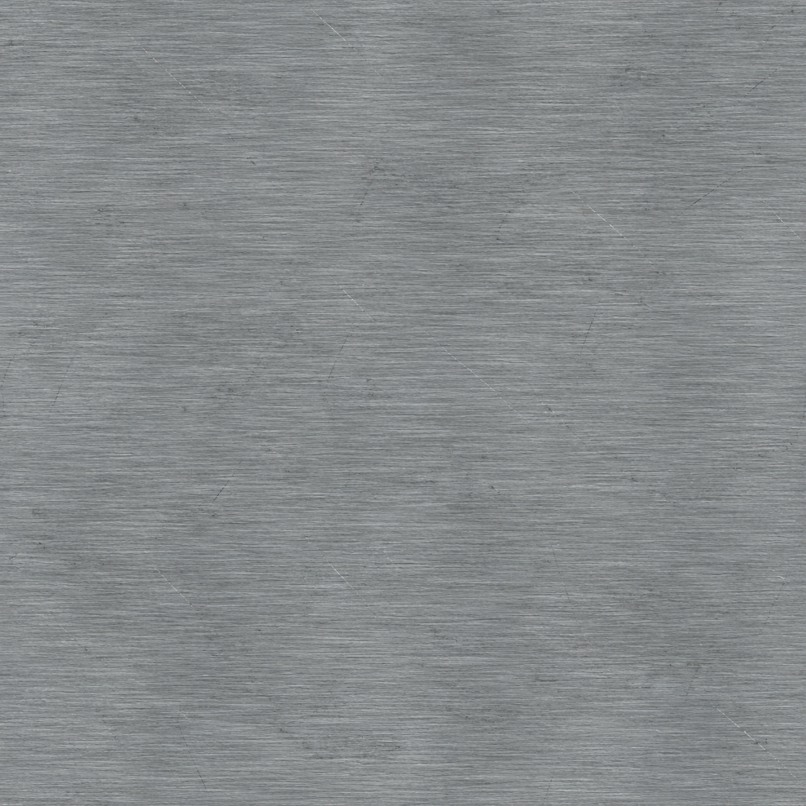
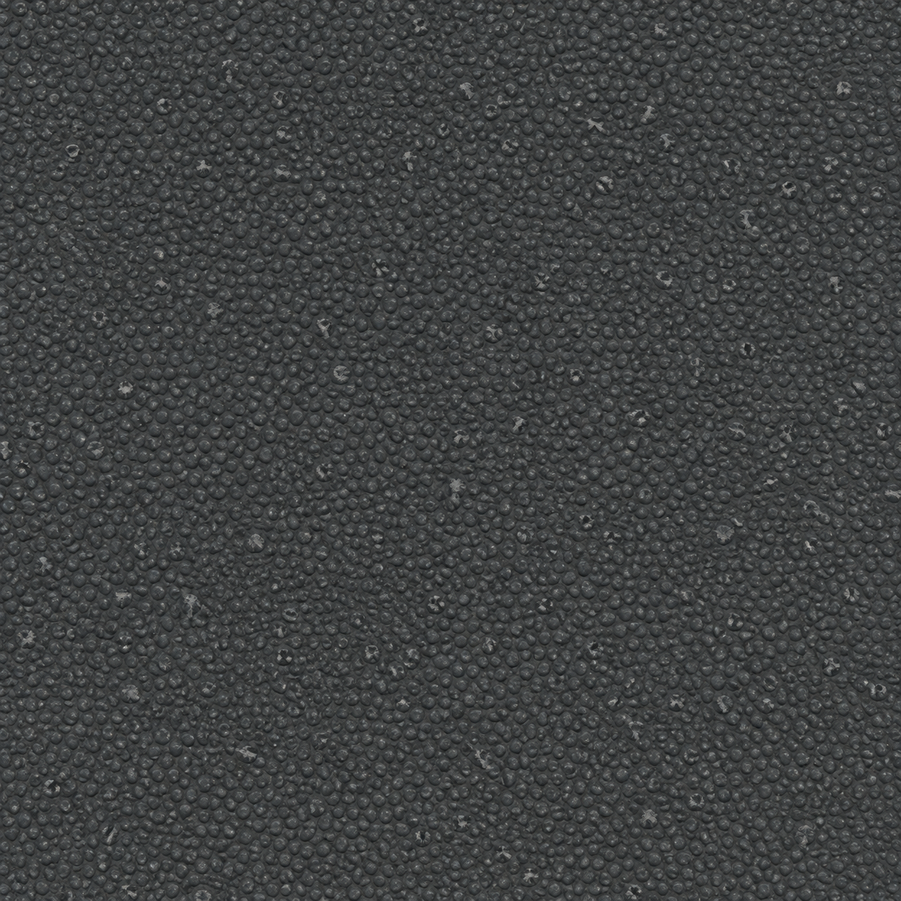
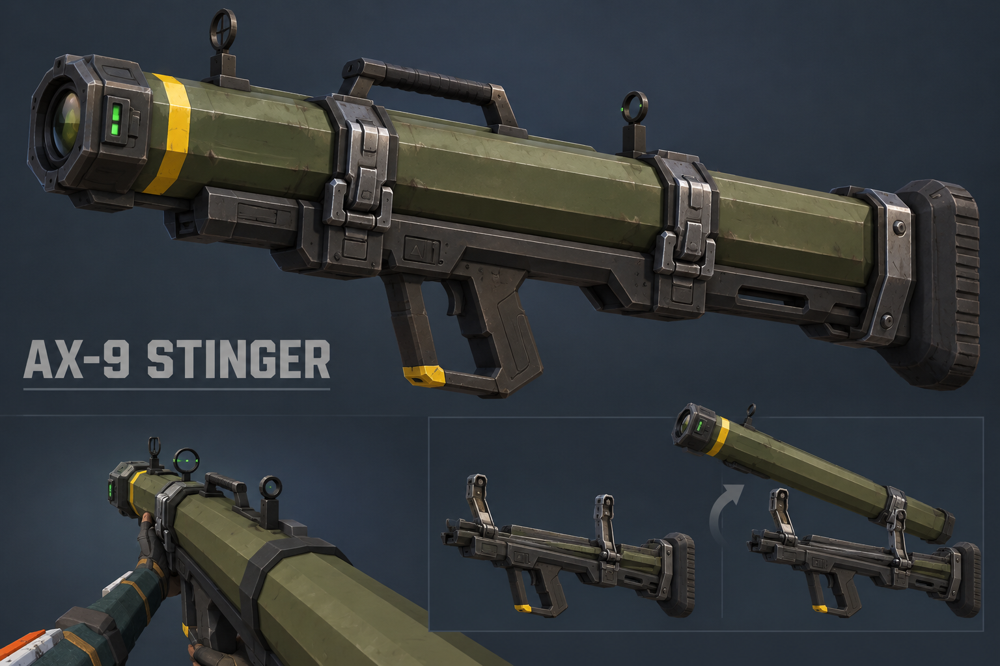
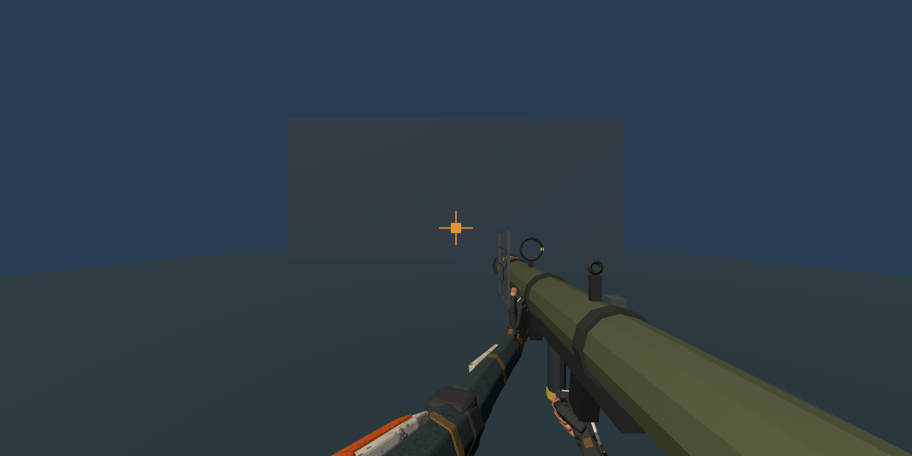

AX-9 STINGER
Wechselbares Startrohr, zwei Verriegelungsklemmen und eine kompakte Suchereinheit. Lack, Metall und Gummi verwenden eigens mit ImageGen erzeugte Texturen.

Aktuelles Spielmodell, im Browser gerendert
ImageGen-Materialien

Lack und Abrieb
Gebürsteter Stahl
GriffgummiIm Spiel
 Bereit zur Zielsuche
Bereit zur Zielsuche Teilweise Zielerfassung
Teilweise Zielerfassung Bestätigter Lock
Bestätigter Lock Freie Visierachse
Freie VisierachseNachladen
 Klemmen öffnen
Klemmen öffnen Neues Startrohr einsetzen
Neues Startrohr einsetzenReferenz und Ausgangsmodell

Ausgewähltes ImageGen-Konzept
AusgangsmodellLokale Browserprüfung bei Desktop-, Querformat- und Hochformatgrößen. Spielwerte und serverseitige Schussfreigabe bleiben unverändert.